Elektraweb Ön Büro Modülü
Elektraweb Web Tabanlı Otel Programı Ön büro modülü ile rezervasyon, resepsiyon, housekeeping, fatura, folyo, channel manager, online rezervasyon, emniyet kimlik bildirimi gibi işlemleri rahatlıkla gerçekleştirebilir, ayrıntılı yönetim raporlarına tek tuşla ulaşabilirsiniz
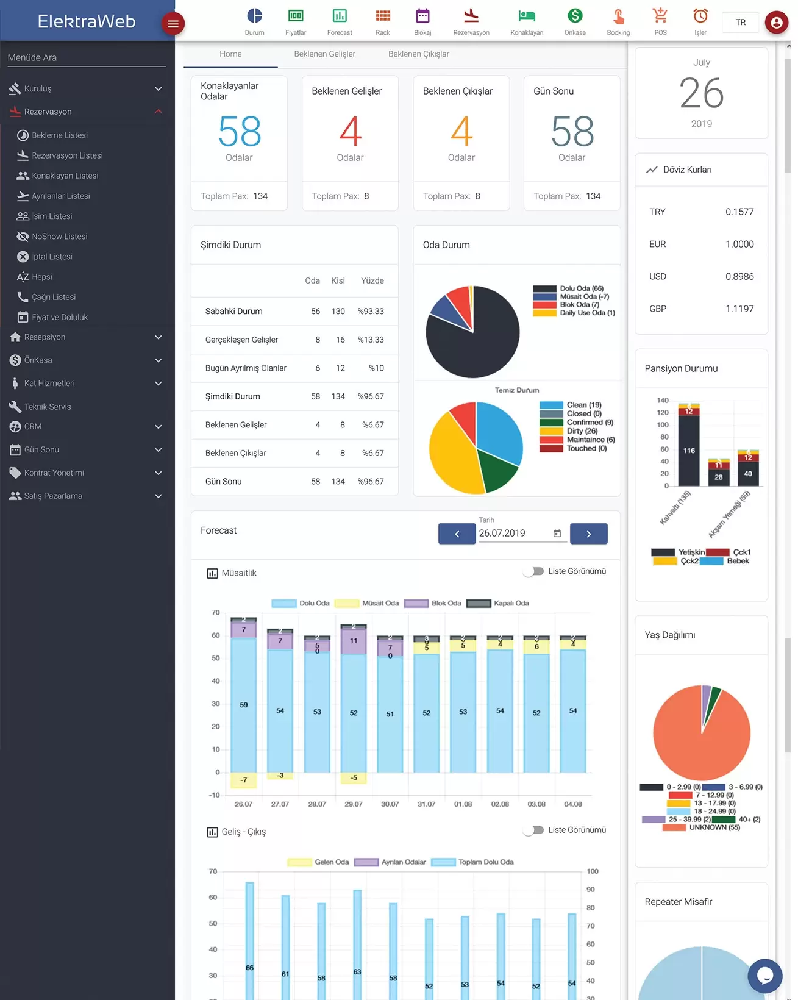
Elektraweb Otel Yönetim Sistemi, “Günlük Durum Ekranı” ile doluluk, gelir, forecast, konaklayanlar, rezervasyonlar ilgili bilgiler ve hatta çağrı merkezi notları gibi otel hakkındaki tüm önemli ve kritik bilgileri tek bir ekranda sunar.
Kullanıcılar bu verileri hem grafikler hem de listeler halinde görür. Ayrıca, istenirse bu verilerin yenilenmesi ve görüntülenmesi için zaman aralığı ayarlanabilir.
Kullanıcılar, web tabanlı bulut yapısı nedeniyle Elektraweb Otel Yazılımı’na herhangi bir mobil cihazdan kolayca erişebilir. Bu, otel yönetimi ve personeline tesisteki aktiviteler hakkında isteğe bağlı bir genel bakış sunar.
Elektraweb Rezervasyon İşlemleri
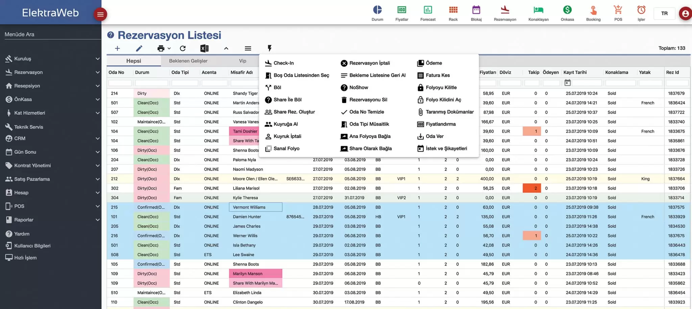
- Rezervasyonlar herhangi bir kritere göre tek tuşla listelenebilir, sıralanabilir, gruplanabilir ve filtrelenebilir
- Renklendirmeler sayesinde dikkat edilmesi gereken bilgiler kolayca görülür
- Tek tuşla tüm işlemlere ulaşılır, tekve/veya toplu olarak işlem yapılır
- Tüm ekranlar farklı formatlarda Excel’e veya yazıcıya aktarılır
- Listelerde çoklu sıralama, filtreleme, arama, gruplama standarttır
- Dijital arşivleme yeteneği sayesinde tüm belgeler, ilgili kaydın içerisine saklanır
- Kullanıcılar yetkilerine göre menüde ve formlarda sadece izin verilen bilgileri görebilir ve işlem yapabilir
Rezervasyon Kartı
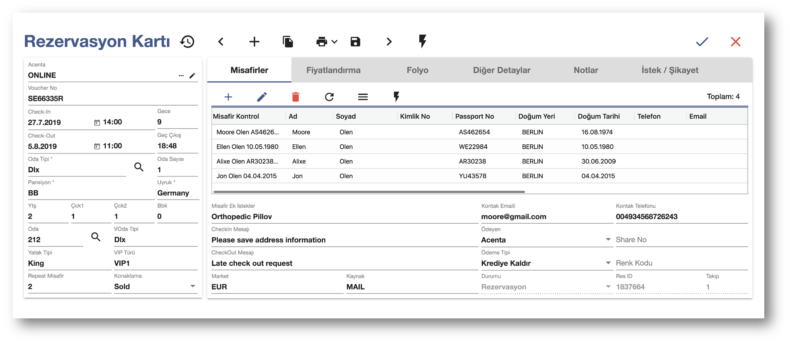
- Rezervasyonla ilgili tüm detaylar bir arada
- No more duplicates ! Misafir kontrol ile eski verilere ulaşım otomatik ve sınırsız profil açma – eşleme
- Tek tuşla oda tipi müsaitliğine ulaşım.
- Tek tuşla oda blokajı yapabilme.
- Acenta detaylarına, fiyatlara, misafir bilgilerine, satış projelerine hızlı erişme.
- Fiyatlandırma sekmesine ulaşım için yetki kontrolü; fiyatlandırma ile ilgili tüm veriler bir arada.
Kat Hizmetleri
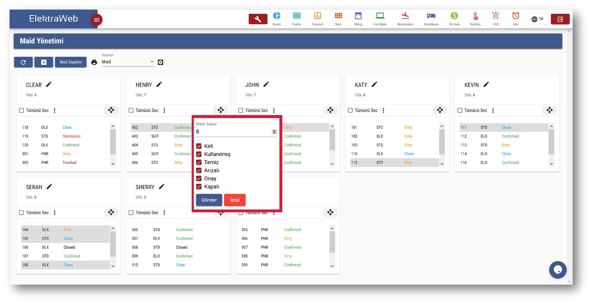
- Elektraweb Otel Programı ile tüm kat hizmetleri işlemleri dijital ortamda yapılabilir
- Oda durumuna göre, eşit ağırlıklı olarak maid dağılımı yapabilirsiniz.
- Kat Görevlisi ve Şef raporlarını alabilirsiniz.
Folyo İşlemleri
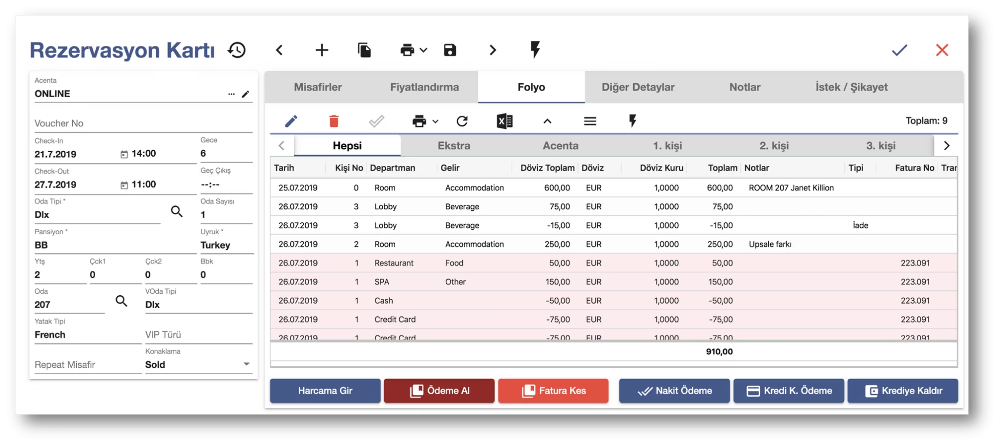
Ödeme, posting ve faturalama işlemleri aynı ekrandan tek tuşla yapılır; zaman kazandırır.
Aynı anda değişik para birimleri ile işlem girilebilir otomatik çevirim sağlar.
Oda hesabı sınırsız farklı pencerelerde görüntülenerek ödeme alınır, hesap girilir, fatura kesilir.
Detaylı ve farklı formattaki tasarımlarla istenilen formatta folyo çıktısı verir.
Ön Muhasebe
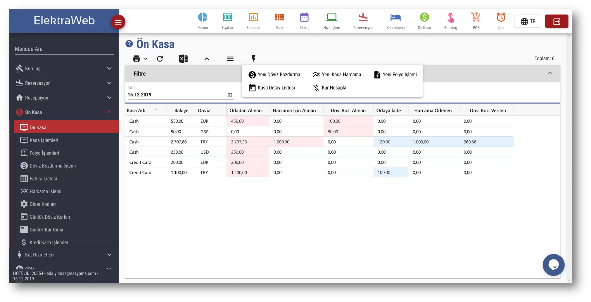
- İstenilen para biriminde işlem yapılabilir
- Günlük harcamalar raporlanabilir.
- Döviz bozma işlemleri hızlıdır.
- Kasa raporu ayrıntılı ve kolay anlaşılırdır.
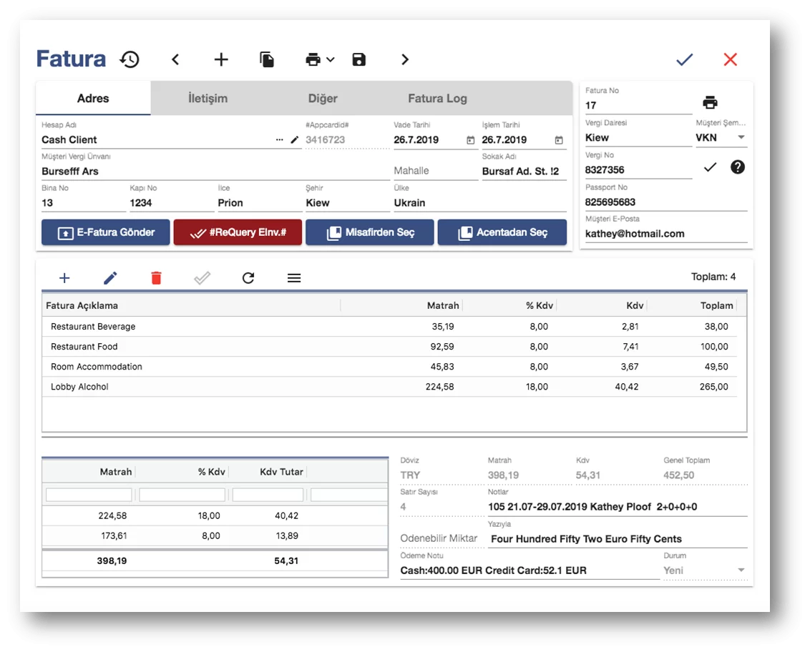
ElektraWeb;
- cari hesap,
- borç – alacak takibi,
- kasa takibi,
- personel hesap takibi,
- fatura ve irsaliye düzenleme,
- çek ve senetlerin vade takibi
gibi ön muhasebe işlemlerini kolaylıkla gerçekleştirmenizi sağlar.
E-Fatura ve E-Arşiv sistemleriyle uyumludur.
Forecast ve Analizler
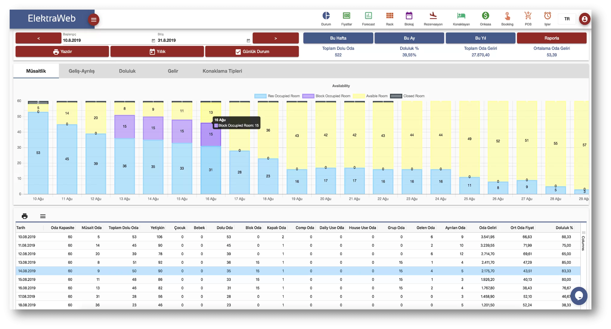
- İstenilen iki tarih arasındaki doluluk hareketlilik ve gelirleri grafik ve detaylı analizlerle gösterir.
- Kullanımı çok kolaydır. grafikte bir günün üzerine tıklandığında o güne ait değişik listeleri otomatik hazırlar.
- Rezervasyon kartına yazdığınız her detaya göre forecast alabilmenizi sağlar.
Blokaj
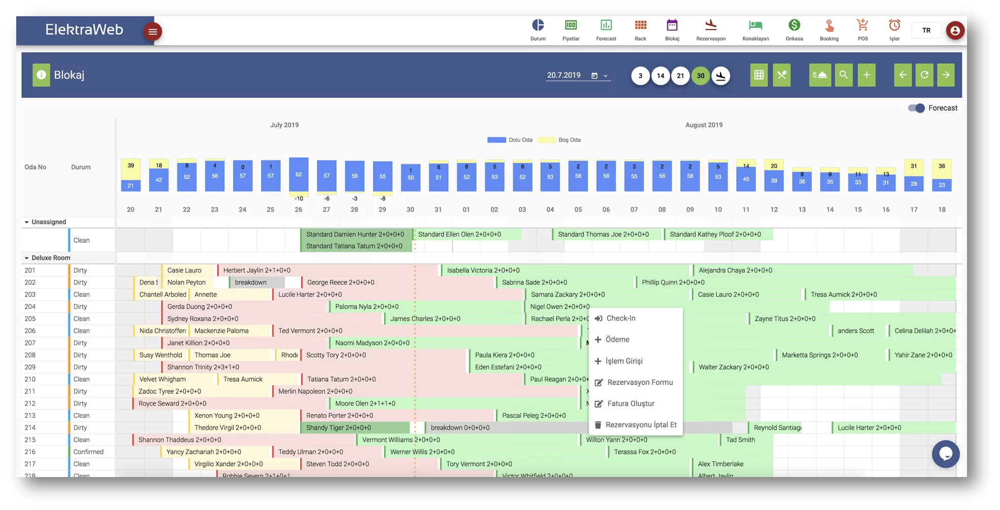
- Önbürodaki operasyonun tamamını (Rezervasyon, Checkin-Checkout, Folyo, Blokaj, Tahsilat) yapabileceğiniz şekilde tasarlanmıştır.
- ElektraWeb Blokaj ekranından misafirin rezervasyon kartına ulaşabilir, sürükle bırak ile oda – tarih değiştirilebilir, tahsilat, chin/chout işlem girişi yapabilir, folyosuna gidebilirsiniz.
- Online kanallardan gelen ve daha oda ataması yapılmamış rezervasyonlarınızı da blokajda en üstte görebilir, sürükle bırak ile oda verebilirsiniz.
- Yine bu ekranda kanal yönetimi işlemleri yapılabilir ve POS bilgileri girilebilir.
Roomrack
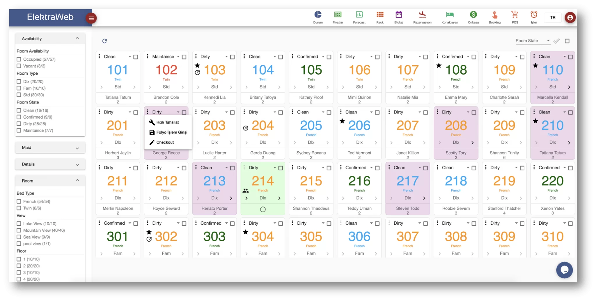
- Anlık oda durumları tek ekranda görüntülenebilir, temizlik ve doluluğa göre farklı renklerle işaretlenebilir
- Gösterilen odalar filtrelenip girişlere, çıkışlara ve konaklayanlara kolaylıkla ulaşılabilir
- Bu ekrandan çıkmadan seçilen oda üzerinde tahsilat, folyo ve check-out işlemleri yapılabilir
- VIP, geç check-in ve check-outlar için kuyruktaki odalar görsel simgeler ile işaretlenebilir
Görev ve İş Yönetimi
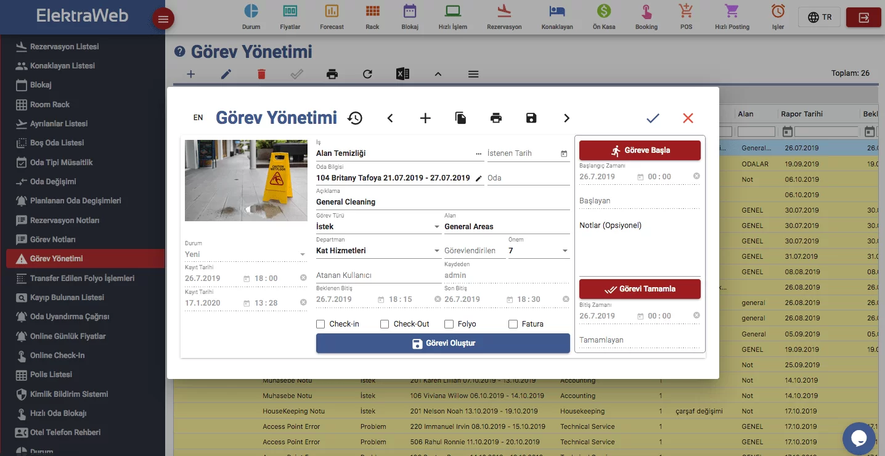
- Girilen tüm istek ve şikayetler otomatik görev yönetimine dahil olur. İşin tanımına göre, bölümü, yetkilisi, önemi ve beklenen bitiş süresi belirlenir.
- İş, ilgili birimin ekranına veya mobil cihazına düşer. Çağrıyı alan görevli “göreve başla” tuşuna basarak başlar ve bittiğinde ise “tamamla” diyerek bitirir.
- Eğer iş, planlanan ve/veya max zaman diliminde bitmez ise otomatik bir üste mesaj gider.
- Misafir ile ilgili olan işlemler rezervasyon kartı içerisinden de takip edilir. İstenirse check-in, check-out,folyo ve faturalama işlemleri esnasında otomatik hatırlatma yapar.
- VIP, setup ve ön ödeme kontrol gibi işlemler böylece hem hatırlatma hem de ilgili bölüme bir görev olarak tanımlanmış olur.
- Otel veya otelleriniz için güvenli IP tanımlamalarını yapabilirsiniz. Sadece sizin izin verdiğiniz IP adreslerinden kullanıcılar giriş yapabilir.
- Belli bir gün süreyle kullanılmayan şifreleri otomatik pasife alabilirsiniz.
- Kullanıcılarınızı belli gün periyotlarında şifre değişimine zorlayabilirsiniz.
- 2FA kullanımını tüm otel kullanıcıları için zorunlu hale getirebilirsiniz.
- Kullanıcı şifreleriniz minimum 8 karakter olmalı; mutlaka bir harf, sayı ve işaret içermelidir.
- Kullanıcının sadece mesai saatleri içinde programı kullanmasını sağlayabilirsiniz.
- Kullanıcının sadece bir ya da birden fazla IP’den giriş yapabilmesini sağlayabilirsiniz.
- Bir kullanıcı için bir son kullanım tarihi belirleyebilirsiniz. Bu tarih geldiğinde şifre kullanımdan kaldırılır. Kullanıcı kesinlikle sisteme giriş yapamaz.
- Kullanıcı en son ne zaman şifre değiştirmiş takip edebilirsiniz.
- Sadece bir kullanıcı için 2FA kontrolünü açabilirsiniz. Belirlediğiniz IPler ile bağlandığında 2FA kontrolü yapmayıp, başka bir IP ile bağlandığında 2FA kontrolü sağlayabilirsiniz.
- Bir kullanıcı ilk defa sisteme girdiğinde, kendi şifresini belirleyerek şifre değişimi yapması zorunludur.
- Diğer hiçbir kullanıcı ya da sistem yöneticisi şifre bilgilerine ulaşamaz.